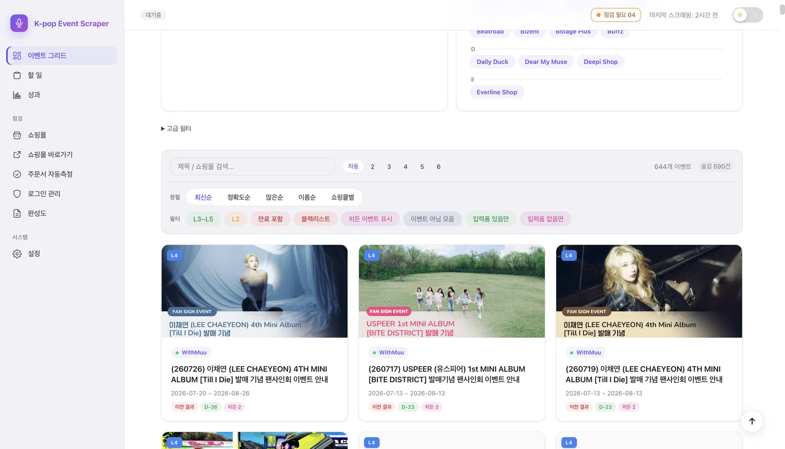
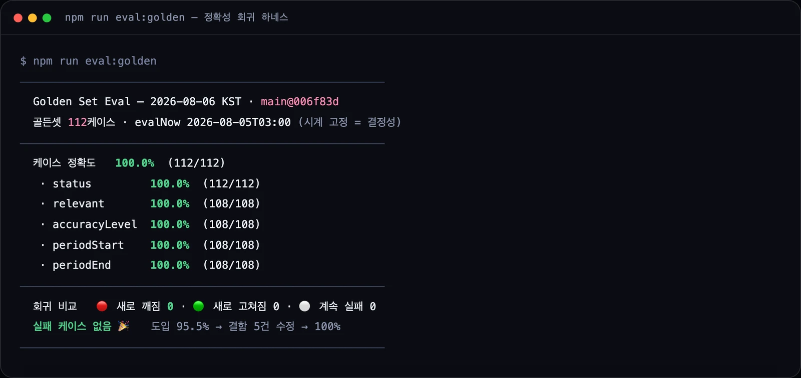
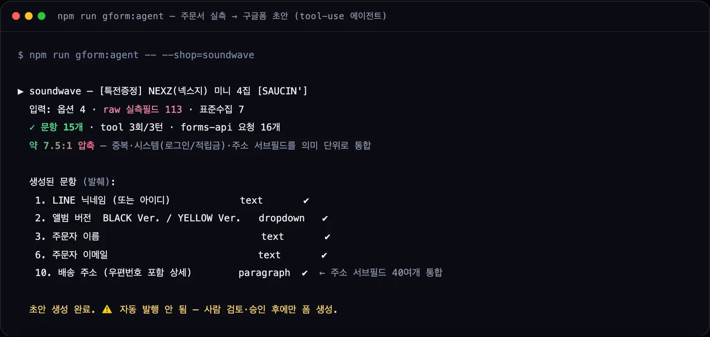
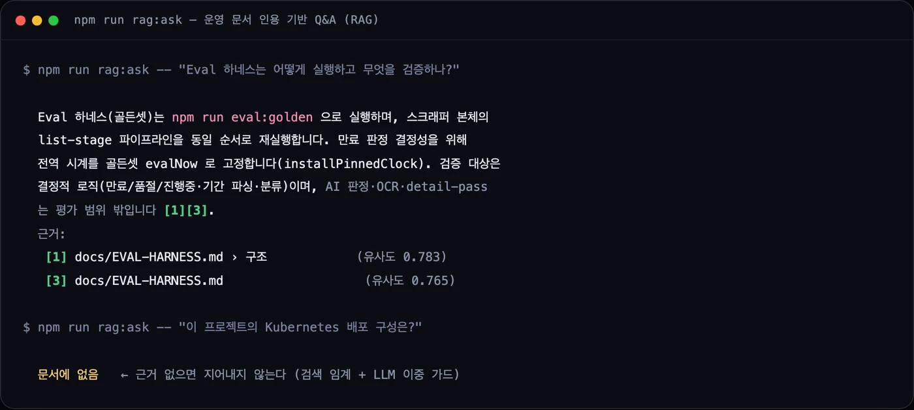

HWANG YUBIN — PORTFOLIO
현장의 문제를,
AI와 자동화로
끝까지.
복지 현장의 종이 서류부터 커머스 실무의 반복 소싱까지 —
제가 직접 겪은 비효율을, 실제 사람들이 매일 쓰는 시스템으로 바꿉니다.
CH.1 — 문제
종이에 적고, 전화로 받고,
서류철에 쌓이던 하루
사회복무요원으로 지역아동센터의 하루를 지켜봤습니다. 출석은 수기로, 결석 연락은 개별 전화로, 기록은 종이로 — 선생님의 시간이 아이들이 아니라 행정에 쓰이고 있었습니다.
성산지역아동센터 통합 운영 플랫폼 · 2026년 4월부터 실제 운영 중 · 아동 개인정보 보호로 링크 비공개
첫 현장
수기 출석부와
종이 서류의 세계
센터장님께 직접 제안하고 승인을 받아 혼자 개발을 시작했습니다. 학생·학부모·교사가 각자의 화면으로 쓰는 웹 서비스로 4주 만에 바꿨습니다.
하루 30분 걸리던 출석 처리가 3분이 되었습니다. 이 첫 현장이 "반복 노동을 시스템으로"라는 이야기의 시작입니다.
실제 운영 중인 서비스의 구동 화면
CH.2 — 자동화
사람이 매일 반복하던
수십 개 사이트 순회
K-pop 구매대행 실무의 이벤트 소싱을, 64개 쇼핑몰을 자동 수집·검증하는 데스크톱 앱으로 통합했습니다. 단순 크롤러가 아니라 목록 → 디테일 → 주문서 실측 → 브리핑까지 도는 파이프라인입니다.
macOS·Windows 설치형 배포 · 실무에서 매일 사용 중 · v1.0.6
목록 수집
플랫폼별 디스패치로 64개 쇼핑몰 이벤트 목록을 긁고 상태(진행/만료/품절)를 판정.
디테일 추출
본문·기간·특전·응모 조건을 파싱. OCR로 포스터 응모 마감까지 회수.
주문서 실측
로그인→상품→장바구니→주문서까지 진입해 받아야 할 입력 항목을 실측, 장바구니는 원복.
브리핑
새 이벤트·마감 임박·할 일을 하루 요약으로. 사람이 검토할 것만 남긴다.
$ npm run scrape:cli # 01 목록 수집 — 플랫폼별 디스패치로 순회 [cli-scrape] [62/64] 올리브영 Global (JS) [cli-scrape] [64/64] · 64 shops / 1,355 events # 02 디테일 추출 — 정적/동적 자동 분기 [detail-pass] yg_select events=9 detailTargets=7 static=7 [detail-pass] oliveyoung_global events=24 detailTargets=24 dynamic=10 # 03 주문서 실측 — 로그인 → 상품 → 장바구니 → 주문서 [follow] withmuu OK …/goods_view.php?goodsNo=1000016 fields=12 reqInfo=10 [follow] oliveyoung_global skipped: parent has usable form (5 fields) # 상태 판정(결정적) — 만료·오래된 이벤트 자동 회수 [expired] AMPERS&ONE 4th Mini 'DEFINITION' — ended 2026-07-05 [scraper] trim: filter kept 0/2 (dropped 2 events older than 90d) ✓ 수집 사이클 완료 64개 쇼핑몰 순회 · 1,355 이벤트 · 새 이벤트·마감 임박만 브리핑 상단에
실측
목록만 긁지 않고,
주문서까지 들어가 확인합니다
가능한 쇼핑몰은 로그인 → 상품 → 장바구니 → 주문서까지 자동 진입해, 고객에게 실제로 받아야 할 입력 항목(응모자명·생년월일·연락처 등)을 실측합니다.
사이트별 예외는 77개 모듈에 격리하고, 공통 엔진은 플래그로만 확장 — 한 사이트를 고쳐도 나머지가 깨지지 않는 구조입니다.

실제 운영 화면 — 64개 쇼핑몰의 이벤트가 상태와 함께 한 화면에
CH.3 — AI
AI를 붙이는 게 아니라,
AI가 틀리면 어떻게 잡는가
이벤트 분류·OCR·구글폼 초안 에이전트·런북 RAG — 그리고 그 위에 결정적 회귀 가드. AI는 판단에, 결론은 재현 가능한 규칙에 둡니다.

결정적 회귀 하네스 — 만료·품절·기간·분류 판정을 골든셋 112케이스에 재실행. 무엇이 새로 깨졌는지 매번 즉시 보고.

구글폼 초안 에이전트 — 노이즈 113필드 → 문항 15개(≈7.5:1). tool-use 멀티스텝, 자동 발행 없이 사람 검토.

런북 RAG — 답마다 근거 문서·섹션 인용. 근거 없으면 지어내지 않고 "문서에 없음".
결정적 가드레일
만료·품절·진행중 판정은 AI가 아니라 결정적 로직. 골든셋 회귀 하네스가 매번 "무엇이 새로 깨졌는지"를 즉시 말한다 — AI 비결정성을 평가 밖으로 분리. 위 세 캡처는 모두 실제 CLI 실행 출력입니다.
CH.4 — 신뢰성
만든 것을
계속 돌게 하는 능력
서킷 브레이커, 인증 자동복구 에스컬레이션, 장애 진단, 감사 이력 — 혼자 운영해도 조용한 회귀가 돌아오지 않게 만드는 SRE 감각.
서킷 브레이커
3연속 실패 샵을 자동 격리, 직전 정상 데이터는 지키고 복구 경로를 연다.
인증 자동복구
세션 만료 감지 → 6h → 24h → manual 에스컬레이션. 안티봇을 자극하지 않는 백오프.
sleep-guard
수면 중 600s 타임아웃 오탐의 근본원인 진단 → 하트비트 갭 감지로 근절.
테스트 · 감사
유닛 1,097개 + 라이브 실측 감사. 리팩터가 회귀를 만들면 즉시 잡힌다.
아키텍처
한 사이트를 고쳐도
나머지가 안 깨지는 구조
공통 엔진은 플랫폼별로 디스패치되고, 사이트별 예외는 샵 모듈에 격리됩니다. 엔진의 예외 동작은 오직 플래그 게이트로만 켜져 — 플래그가 없는 샵은 그 코드 경로에 아예 진입하지 않습니다.
checkout-probe · parsers
CH.5 — 임팩트
도입 전 / 후
기술이 아니라 문제에서 출발했고, 수치로 말합니다. 실무 워크플로(소싱 → 공유 → 구매) 안에서 병목을 도구로 바꿨습니다.
출석 처리
하루 30분 수기 → 3분. 선생님의 시간을 아이들에게 돌려줌.
이벤트 소싱
수십 개 사이트 수작업 순회 → 하루 5~6회 자동 수집·검증.
CAPABILITY MATRIX
주장마다, 증거
8개 역량 축 — 각 항목은 이 페이지의 섹션·케이스 스터디·수치로 연결됩니다. 증거 없는 주장은 싣지 않습니다.
LLM 애플리케이션
tool-use 멀티스텝 에이전트, structured output, 컨텍스트 관리.
AI 신뢰성·평가
골든셋 회귀 하네스, 결정적 가드레일, 정확성 감사.
데이터·웹 자동화
64샵·12플랫폼, anti-bot 대응, 주문서 실측 파이프라인.
소프트웨어 기본기
테스트 1,097 · 커밋 468 · 플랫폼 디스패치 아키텍처.
운영·신뢰성(SRE)
서킷 브레이커, 인증 자동복구, 장애 진단 노트.
AI-native 워크플로
Claude Code + 서브에이전트/워크플로 오케스트레이션 + 감사 루프.
제품·비즈니스 임팩트
문제에서 출발, 수치로 증명(30분→3분, 자동 5~6회/일).
커뮤니케이션
런북·케이스 스터디·문서 감사. 이 포트폴리오 자체가 증거.
AI-NATIVE
어떻게 혼자
9만 줄을 운영하는가
추적 소스 약 9만 줄(앱 본체 ~5.7만)·64개 샵을 한 사람이 유지합니다. 손이 빠른 게 아니라, 검증을 확장하는 워크플로입니다.
규약을 코드로 (CLAUDE.md)
샵별/공통 편집 경계·git 위생·프로세스 보호를 문서로 못박아 매 세션 주입. 같은 실수를 반복하지 않는 표준.
병렬 검증 오케스트레이션
독립 하위 작업을 여러 에이전트에 팬아웃. "혼자 못 보는 것"을 여러 눈으로 본다.
적대적 리뷰
만든 것을 스스로 반박. 그럴듯하지만 틀린 것을 머지 전에 거른다.
메모리 · 감사 루프
배운 것을 파일 메모리로 축적, 상시 하네스로 회귀를 막는다. 문서화가 감사를 강제해 잠재 버그를 잡은 실사례(PR #66).
다섯 축이 하루에 다 돈 사건 — 규약 → 병렬 검증 → 적대적 리뷰 → 문서화 중 버그 발견 → 당일 수정을 케이스 스터디 ④에서 전문으로 읽기 →
DEEP DIVES
케이스 스터디
문제 → 진단 → 설계 → 결과 → 배운 것. 모든 수치·커밋은 저장소에서 재확인한 근거 대조표 포함. 각 편은 본문과 일관된 딥다이브 페이지로 열립니다.